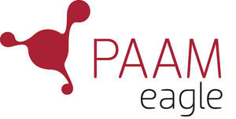

Trade Mark Journal No.2025/050 12 December 2025
UK00004292506 11 November 2025 (6,9,36,39,45)

International priority date claimed: 6 November 2025
(European Union Intellectual Property Office (EUIPO))
(019272452)
- Class 6
- Ironmongery, small items of metal hardware; Pipes and tubes of metal; Ores; Safes and cash boxes; Safes (strong boxes) of metal; Key boxes of metal; Keys.
- Class 9
- Measuring, signaling and checking (supervision) apparatus and instruments; Electronic systems for monitoring, registering and controlling keys; Electric and electronic apparatus and installations for security and monitoring purposes; Electric and electronic apparatus and installations for the checking (supervision) of access; Apparatus for recording, processing, transmission, storage and production of data; Electric monitoring apparatus; Time recording apparatus; Controlled access security systems (electronic); Security access control systems for accessing keys (electronic); Electric and electronic locks; Combination locks; Card locks; Electronic keys; Digital keys; Encoded keys; Encoded magnetic cards; Chip cards; Card readers; Recorded computer programs; Monitors (computer programs); Computer software designed to enable smart cards to interact with terminals and readers.
- Class 36
- Safe storage of keys, property and valuables.
- Class 39
- Storage of keys, property and valuables.
- Class 45
- Security services for the protection of property; Security services for protecting valuables; Security services for protecting keys; Security consultancy; Computerised security services; Opening of security locks.
PAAM Systems AB
Representative: Womble Bond Dickinson (UK) LLP